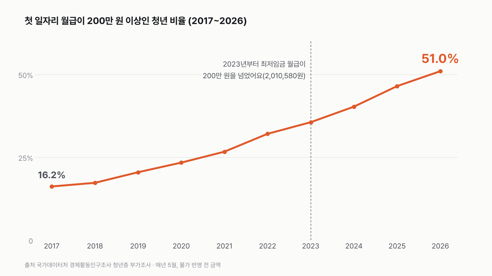
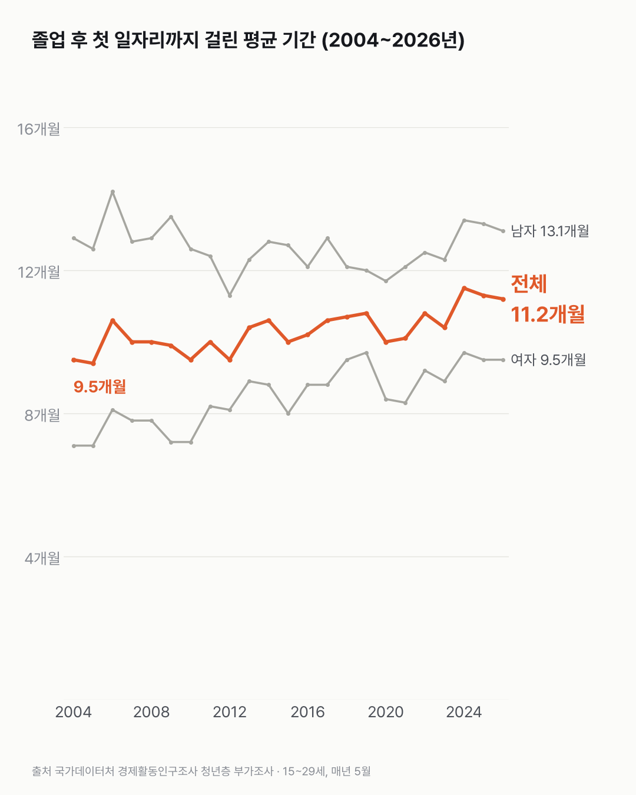

첫 월급 200만 원, 이제 청년 둘 중 하나는 넘어요
첫 월급 200만 원은 이제 청년 첫 월급의 한가운데에 가까운 금액이에요. 최저임금만 받아도 넘는 선이 됐어요.

- 첫 일자리 월급이 200만 원을 넘는 청년은 2017년 16.2%에서 2026년 51.0%가 됐어요.
- 같은 사이 최저임금으로 받는 월급도 2023년부터 200만 원을 넘었어요.
- 졸업하고 첫 일자리를 얻기까지는 평균 11.2개월 걸려요. 2004년엔 9.5개월이었어요.
월급날 아침, 은행 앱에 입금 알림이 떠요. 첫 월급이면 그 숫자를 몇 번이고 다시 보게 되죠. 2026년 청년들이 답한 첫 월급은 200만~300만 원 칸에 가장 많이 모였어요(42.1%). 300만 원 넘게 받은 사람도 8.9%예요. 200만 원을 넘긴 사람이 2017년엔 여섯 중 하나였으니, 세 배 넘게 늘었어요.
최저임금도 계산해 봤는데, 최저임금 월급이 이미 200만 원을 넘었더라고요. 저도 몰랐어요. 주 40시간 일하고 최저임금을 받으면 2022년엔 월 191만 원이었고, 2023년 201만 원으로 200만 원 선을 넘었어요. 2026년엔 215만 원이에요.
아래쪽은 줄었어요. 150만 원이 안 되는 첫 월급은 2017년 54.2%에서 2026년 25.8%가 됐어요. 절반에서 4분의 1로요. 물론 50만~100만 원 구간은 2024년 9.5%에서 2026년 11.8%로 조금 늘었어요.
첫 일자리를 얻기까지 걸리는 시간은 길어졌어요. 2026년엔 평균 11.2개월. 2004년엔 9.5개월이었고, 가장 길었던 건 2024년 11.5개월이에요. 3개월 안에 취업한 사람은 2004년 56.3%에서 2026년 47.1%로 줄었어요.


첫 월급 칸은 위로 올라갔고, 첫 일자리까지 가는 길은 길어졌어요. 그 사이 몇 달을 청년들이 어떻게 보냈는지는 이 표에 없었어요.
이 숫자는 어디서 왔나요
출처
어떻게 셌나요
- 매년 5월에 하는 청년층 부가조사예요. 15~29세 가운데 학교를 졸업하거나 중퇴한 뒤 일해 본 사람에게 첫 일자리를 물어요. 지금 다니는 일자리가 아니에요.
- 첫 월급은 금액 구간(예: 200만~300만 원)으로 답해요. 비율은 그 구간에 든 사람 수를 전체로 나눈 값이에요.
- 금액은 명목 금액이에요. 물가를 빼지 않은 그해 돈이라, 물가와 최저임금이 오른 만큼이 들어 있어요. 2017년의 200만 원과 2026년의 200만 원은 가치가 달라요.
- 첫 일자리까지 걸린 기간은 표에 나온 평균을 그대로 썼어요. 기간 구간은 월급 받는 사람(임금근로자) 기준이에요.
- 최저임금 월급은 고시된 시급에 209시간(주 40시간, 주휴시간 포함)을 곱해 직접 계산했어요.
한계 5가지
이 데이터로 말할 수 없는 것
- 명목 임금이에요. '첫 월급이 늘었다'가 '생활이 나아졌다'는 뜻은 아니에요.
- 첫 일자리 시점이 사람마다 달라요. 2026년 응답자 중엔 몇 년 전에 첫 일자리를 가진 사람도 있어요.
- 월평균 임금 구간은 응답자가 답한 값이에요. 세전·세후 구분이 표에 없어요.
- 남녀 차이의 이유(병역 등)는 이 데이터로 판단하지 않아요.
- 취업·이직을 권하는 글이 아니에요.
계산 기록
쓰기 전에 정한 것
- 월급이 명목 금액이라 물가를 뺀 비교가 될 수 없다는 점을 데이터를 받기 전에 적어 두고, 제목·차트·한계에 반영했어요.
- 구간 비율은 구간 인원을 전체로 나누고, 평균 소요기간은 표 값을 그대로 쓰기로 미리 정했어요.
- 취업·이직을 권하지 않고, 원인은 판단하지 않기로 정해 두었어요.
처음 던진 질문
첫 월급이 통장에 찍히는 날, 200만 원이 넘으면 꽤 받는 편일까요? 청년층 부가조사에서 졸업 후 첫 일자리 월급을 해마다 어떻게 답했는지 열어 봤어요.
수집·검증 기록
- 표: KOSIS DT_1DE9080S, DT_1DE9058S. 수집일 2026-10-29 (KOSIS 오픈API). 임금 구간 인원은 천 명, 소요기간은 개월.
- 계산: 구간 비중 = 구간 인원 ÷ 계.
- 최저임금 월급 = 고시된 시급 × 209시간(주 40시간, 주휴 포함). 2022년 9,160원 → 191만 4,440원, 2023년 9,620원 → 201만 580원, 2026년 10,320원 → 215만 6,880원.
- '여섯 중 하나'(2017년) = 16.2%, '둘 중 하나'(2026년) = 51.0%.
- 검증: 임금 구간 합 = 계, 소요기간 구간 합 = 임금근로자 수(각각 0.2천 명 안).
- 교차 확인: 2026년 첫 일자리 임금 200~300만 원 42.1%, 150~200만 원 23.3%, 50~100만 원 11.8%가 보도와 같음. 평균 소요기간 11.2개월은 보도에서 찾지 못함.
새 글 나오면 받아 보기
피드 리더 앱에 이 사이트 주소를 한 번 넣어 두면, 새 글이 올라올 때 앱에 떠요. 가입이나 메일 주소는 필요 없어요.
받는 법 보기
- 피드 리더 앱을 하나 골라요. 새 글을 모아 보여 주는 앱이에요. 예를 들면 Feedly나 Inoreader가 있어요. 둘 다 무료고 웹·휴대폰에서 써요.
- 앱에서 '구독 추가'(+)를 누르고 아래 주소를 붙여 넣어요.
- 끝이에요. 새 글이 올라오면 앱 목록에 떠요.
https://protofu.github.io/opendata-insight/feed.xmlFeedly를 쓴다면 여기를 눌러 바로 추가할 수도 있어요.